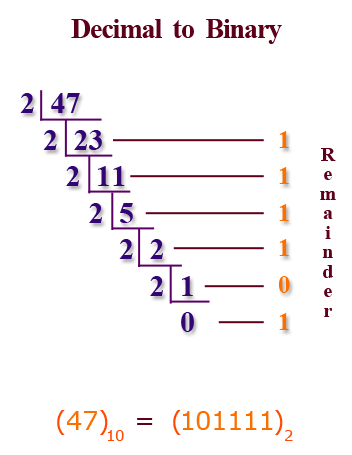
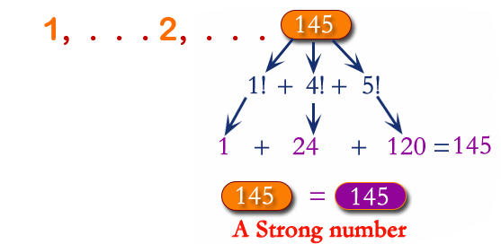

Week 7 Tasks
While Loops and Do While Loops

Task 31 (Experiment 13)
WAP to find the LCM and GCD of two given numbers using while loop.
Hint:
If a and b are the two numbers entered by the user then GCD of them is the largest
number which is not greater than a and b and also is divisible by both a and b.
Once GCD is known simply use the formula to find LCM
$$ LCM = \frac{a * b}{GCD} $$
Task 32 (Experiment 14)
Write a C program to find if the entered three digit number is an Armstrong number or not using do while loop.
When the sum of the cube of the individual digits of a three digit number is equal to that number, the number is called Armstrong number. For example 153.
$$ 1^3 + 5^3 + 3^3 = 153 $$
Task 33
Write a program in C to convert a decimal number into binary using while loop.
Hint
Task 34
WAP to convert binary number to decimal number using while loop.

Task 35
Write a C program to find Strong Numbers within a range of numbers using do while loop.
Hint
If sum of factorial of digits is equal to original number then it is Strong number
